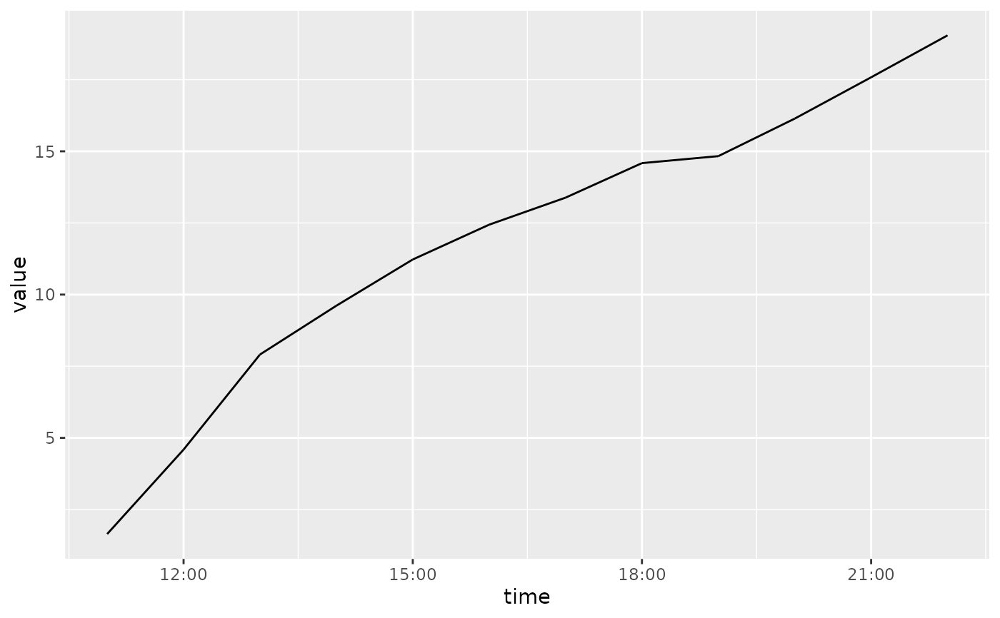
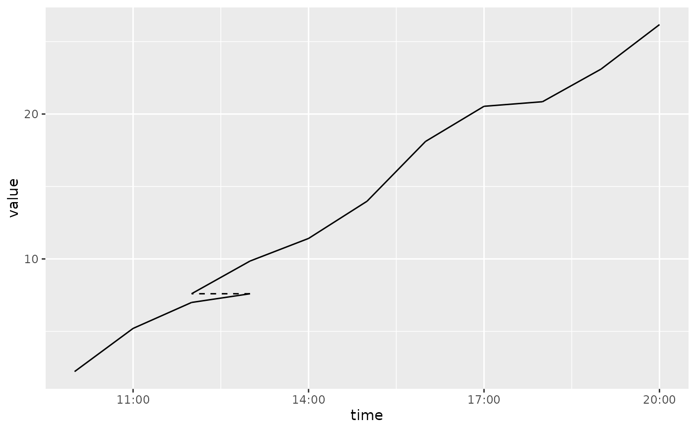
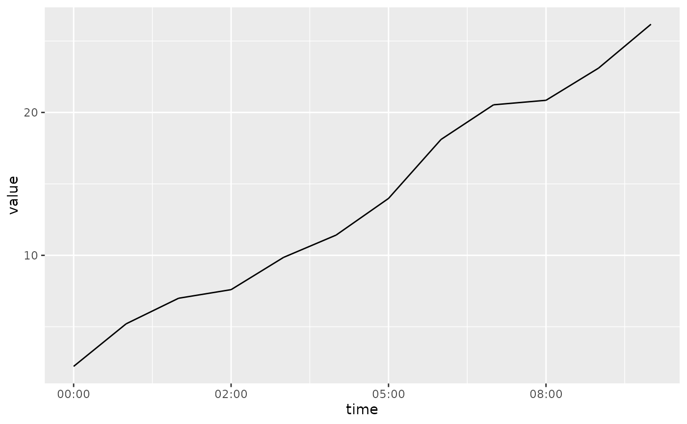
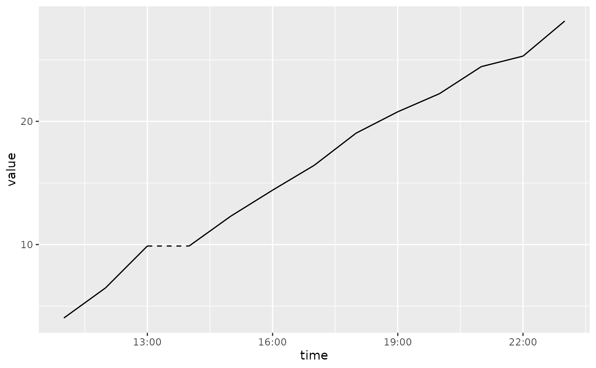
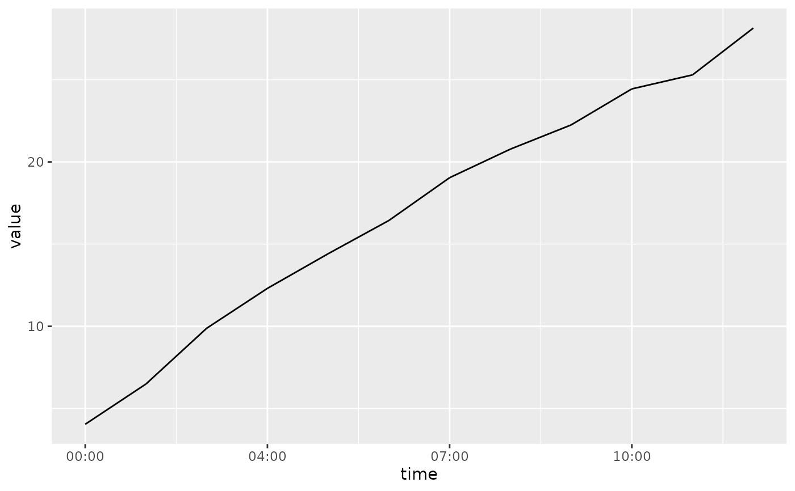

geom_time_line() connects observations in order of the time variable, similar to
ggplot2::geom_line(), but with special handling for time zones, gaps and
duplicated values.
The geometry helps to visualise time with changing time offsets provided by the
[x/y]timeoffset aesthetics. Changes in time offsets are drawn using dashed lines,
which are most commonly used for timezone changes and daylight savings time transitions.
Timezone offsets are automatically used when times from the mixtime package are used
in conjunction with position_time_civil() positioning (the default).
This geometry also respects implicit missing values in regular time series, and will not connect temporal observations separated by gaps.
The ggplot2::group aesthetic determines which cases are connected together.
geom_time_line(
mapping = NULL,
data = NULL,
stat = "identity",
position = "time_civil",
na.rm = FALSE,
orientation = NA,
show.legend = NA,
inherit.aes = TRUE,
...
)If FALSE, overrides the default aesthetics, rather than
combining with them. This is most useful for helper functions that define both
data and aesthetics and shouldn't inherit behaviour from the default plot specification.
Other arguments passed on to ggplot2::geom_line().
The geom_time_line() geometry extends ggplot2::geom_line() with time
semantics that ensure the line's slope accurately reflects rates of change in
the measurements over time.
Most notably, geom_time_line() works closely with position_time_civil()
and position_time_absolute() to correctly display time in civil and
absolute time formats, respectively. Civil time positioning (the default)
shows time as experienced in a specific timezone (also known as 'local time',
it is the time on clocks in that timezone). Absolute time positioning shows
time as a continuous timeline without timezone adjustments.
When time series are visualised in civil time, timezone offset changes (e.g. due to daylight saving time) cause 'jumps' in time which are indicated with dashed lines. This preserves the integrity of the line's slope across these transitions. Another benefit of visualising time series in civil time is to compare time series across different timezones, as the time axis is better aligned with human behaviour in their local timezone (e.g. working hours, sleep patterns, etc). Plotting time series in absolute time shows the exact contemporaneous timing of events across multiple timezones, which is useful when resources or patterns are shared across timezones (e.g. international markets, server load balancing, etc).
This geometry also maintains semantically valid slopes when time values are
missing (either implicitly or explicitly), or duplicated. Implicit missing
values in regular time series are semantically equivalent to explicit missing
values, and geom_time_line() since the slope between unkown values is also
unknown, geom_time_line() will not draw lines connecting missing values of
either type. Since duplicated time values are not semantically valid in
regular time series, geom_time_line() will issue a warning (or an error if
systematic duplicates are detected). When drawing a line between duplicated
time points, the correct slopes are drawn by connecting all lines that lead
to and from the duplicated time points (rather than drawing sawtooth lines).
Further details about each specific capability are described in the following sections.
The xtimeoffset and ytimeoffset aesthetics allow for visualization of time
offset changes, such as timezone transitions or daylight saving time changes.
When successive time offsets differ, a dashed line segment is drawn to show
the offset transition. These aesthetics are automatically set when using
position = position_time_civil() (the default), however the offsets can
also be set manually to show other types of time offsets. One example of when
it is useful to set the offsets manually is when showing measurements from a
sensor with a known time drift (e.g. a clock that runs fast or slow) that is
re-calibrated at known times.
Explicit missing values are where an NA value is included in the data, but
for regular time series it is also possible to identify implicit missing time
values. Unlike ggplot2::geom_line(), geom_time_line() will also not connect
points separated by implicit missing values, creating gaps in the line (just
like when an explicit missing value is present in ggplot2::geom_line()).
If there are duplicated time values within a group, geom_time_line() will
issue a warning. An error will be raised if these duplications are systematic
across the geometry, specifically if more than 50% of time points contain the
same number of duplicates. Systematic duplicates typically indicate a need to
use grouping aesthetics (ggplot2::group, or ggplot2::colour) to
draw separate lines for each time series. Rather than plotting an erroneous
'sawtooth' line which misrepresents the rate of change, the geometry will
draw all lines that connect to and from each of the duplicated time values.
position_time_civil()/position_time_absolute() for civil and absolute time positioning.
ggplot2::geom_line()/ggplot2::geom_path() for standard line/path geoms in ggplot2.
geom_time_line() understands the following aesthetics. Required aesthetics are displayed in bold and defaults are displayed for optional aesthetics:
| • | x | |
| • | y | |
| • | alpha | → NA |
| • | colour | → via theme() |
| • | group | → inferred |
| • | linetype | → via theme() |
| • | linewidth | → via theme() |
| • | xtimeoffset | |
| • | ytimeoffset |
Learn more about setting these aesthetics in vignette("ggplot2-specs").
library(ggplot2)
# Basic time line plot of a random walk (no timezone changes)
df_ts <- data.frame(
time = as.POSIXct("2023-03-11", tz = "Australia/Melbourne") + 0:11 * 3600,
value = cumsum(rnorm(12, 2))
)
ggplot(df_ts, aes(time, value)) +
geom_time_line()

# Random walk with a backward timezone change (DST ends)
df_tz_back <- data.frame(
time = as.POSIXct("2023-04-02", tz = "Australia/Melbourne") + 0:11 * 3600,
value = cumsum(rnorm(12, 2))
)
ggplot(df_tz_back, aes(time, value)) +
geom_time_line()

ggplot(df_tz_back, aes(time, value)) +
geom_time_line(position = position_time_absolute())

# Random walk with a forward timezone change (DST starts)
df_tz_forward <- data.frame(
time = as.POSIXct("2023-10-01", tz = "Australia/Melbourne") + 0:11 * 3600,
value = cumsum(rnorm(12, 2))
)
ggplot(df_tz_forward, aes(time, value)) +
geom_time_line()

ggplot(df_tz_forward, aes(time, value)) +
geom_time_line(position = position_time_absolute())
